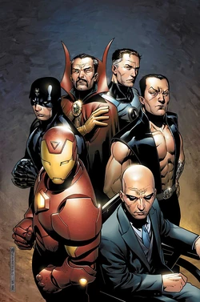
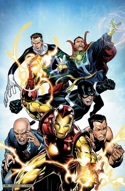
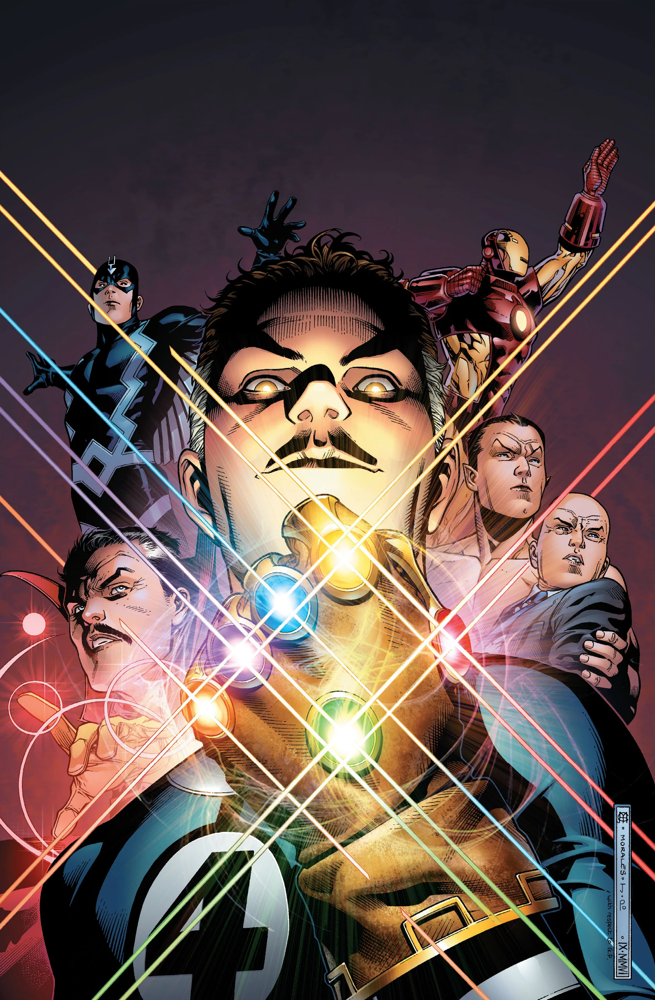
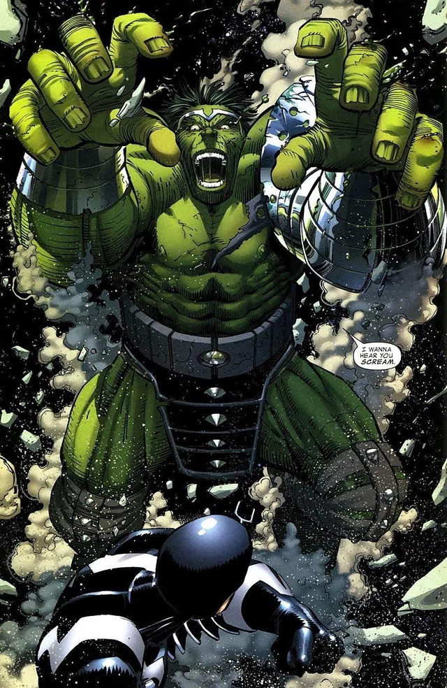

Les Illuminati

Peu après la guerre Kree/Skrull qui impliqua les Avengers et les Inhumains de la Terre, plusieurs représentants de la communauté surhumaine s'associèrent dans l'ombre, sur l’initiative d'Iron Man, afin de prendre certaines décisions ou certaines actions liées à leur communauté.
Stark sélectionna alors six autres héros, chacun incarnant une facette de la communauté surhumaine.


Chacun d'eux pouvait donc apporter un point de vue qui lui serait propre et différent des autres Illuminati.
Le groupe fut donc créé après la première implication de la Terre dans le conflit entre les Krees et les Skrulls.
Réalisant que chacun d'entre-eux disposait d'informations qui auraient pu être utiles aux autres, et qu'ensemble ils auraient pu empêcher ce conflit, Tony Stark réunit les six héros au Wakanda, pour leur proposer de former un gouvernement de la communauté surhumaine, sur le modèle des Nations-Unies.
Initialement, cette idée fut rejetée par ses invités.
Namor refusa, prétextant de la violence de nombreux super-héros, tandis que Xavier y voyait le risque que la haine mutante ne se répande alors aux autres héros.
Le Docteur Strange mit en avant qu'un trop grand nombre de héros étaient en conflit avec les autorités légales ou s'en méfiaient et que le groupe envisagé par Iron Man serait trop proche des autorités pour être reconnu.
En revanche, à l'exception de Black Panther, les héros acceptèrent de se réunir régulièrement pour échanger des informations, voire travailler ensemble à l'occasion.
Seul T'Challa refusa toute collaboration avec le groupe, craignant que tôt ou tard, cette association ne finisse par se livrer à des actes n'ayant plus rien d'altruistes et présidant que cela se finira en désastre.
Le groupe évoqua brièvement l'île vivante appelée Krakoa, que le Professeur X avait détécté, puis se sépara.

Peu après cet accord, les Illuminati se rendirent dans l'Empire Skrull, encore ébranlé par leur récente guerre avec les Krees.
Le groupe avertit l'empereur Skrull, Dorrek, de ne plus attaquer la Terre dans l'avenir, mais furent incapables de quitter la planète.
Capturés par les Skrulls, ils sont analysés sous tous les aspects (le corps de Reed est attaché et étiré au maximum, Namor est asséché, les cordes vocales de Flèche Noire immobilisées, le Professeur X immobilisé et analysé, Docteur Strange immobilisé et l'armure d'Iron Man analysée sous toutes les coutures) jusqu'à ce que Stark ne s'échappe et prenne la tête d'une évasion.
Revenus sur Terre, les Illuminati réalisent qu'une future attaque des Skrull est inévitable, dès que ceux-ci auront exploités les informations glanées lors de leur capture.
Et effectivement, par la création de clones de Reed Richards, les Skrull finissent par découvrir un moyen de ne plus être détecté par les humains, ce qui leur permit de s'infiltrer en toute tranquillité.
Plusieurs mois après, Iron Man réunit les Illuminati pour les informer que les Avengers se reformaient, consécutivement à une évasion massive du Raft, une prison de haute-sécurité de New-York.
Le groupe accueillit la nouvelle avec satisfaction, à l'exception de Namor, et Iron Man aborda la question de Sentry. Bien qu'aucun d’eux n'ait de souvenirs du héros, Mr Fantastique découvrit qu'il possédait un dossier sur le héros oublié et le Professeur X réalisa que ses souvenirs avaient été modifiés.
Mr Fantastique utilisa son dossier pour retrouver Reynolds et l'aider à annuler ce qu'il s'était lui-même imposé.
Iron Man annonça alors aux Illuminati que les New Avengers assumaient l'entière responsabilité de Sentry, si jamais il s'avérait qu'il perdait de nouveau le contrôle de ses actes.
Après un combat entre Miss-Hulk et Titania, Reed hérita de la Gemme du Pouvoir et entreprit de réunir toutes les autres afin d'empêcher qu'elles ne tombent entre de mauvaises mains.
Après avoir acquis les Gemmes de l'Âme et de l'Espace, ainsi qu'un Gant de l'Infini, il révéla son projet aux Illuminati, demandant l'aide de ses associés pour parvenir à son but.
Bien que le groupe fut réticent à cette idée, ils réunirent tout de même les six joyaux.
Mr Fantastique tenta alors d'utiliser le pouvoir des Gemmes pour les effacer de l'existence, mais découvre l'impossibilité d'un tel acte.
Devant cet échec, combiné à une réprimande du Gardien Uatu, Reed décida de confier une Gemme à chaque Illuminati, afin qu'il la cache, garantissant ainsi qu'elles ne pourront plus être réunies et utilisées conjointement.

Quelques semaines après, Maria Hill, directrice du SHIELD, contacta Iron Man au sujet de Hulk, qui avait récemment ravagé Las Vegas et causé plusieurs morts.
Iron Man réunit alors une nouvelle fois les Illuminati, sauf le Professeur X alors porté disparu, pour discuter d'une solution pour régler le problème Hulk, proposant de l'envoyer dans l'espace.
Seul Namor s'oppose à un tel projet, persuadé qu'ils n'avaient pas le droit d'exiler leur allié occasionnel et dénonçant leur solution de facilité, plutôt que de chercher un moyen de soigner Banner.
Mais les quatre autres Illuminati votent en faveur du plan, provoquant la démission de Namor, qui reconnaît que la Panthère Noire avait raison dans ses avertissements initiaux et prédit que, tôt ou tard, Hulk reviendra sur Terre et qu'ils devront faire face à sa vengeance justifiée.
Malgré cette séparation mouvementée, Iron Man réunit de nouveau le groupe pour les informer de l'éventualité de l'Acte d'Enregistrement des Surhumains, qui illustre une défiance croissante du public à l'égard de tous les surhumains.
Iron Man prédit un conflit au sein de la communauté qui laissera des traces profondes, et réitère son idée d'un conseil, incitant les Illuminati à agir avant qu'il ne soit trop tard.
Mais cette fois, Iron Man ne convainc que Mr Fantastique, provoquant la dissolution des Illuminati.
Quelques mois après, ce fut cette fois Namor qui eut raison quand Hulk, qui avait échoué sur Sakaar, une autre planète que celle prévue initialement par les Illuminati, revint sur Terre, à la tête d'une armée pour tirer vengeance de ceux qui l'avaient exilé, après que le vaisseau dans lequel il avait voyagé a explosé, provoquant la mort de sa femme ainsi que de la quasi-totalité de son peuple.
Il commença par attaquer Flèche Noire sur la lune, avant d'arriver à New-York et de lancer un ultimatum de 24 heures pour obtenir les trois autres Illuminati responsables de son exil.
Même le Professeur X, absent au moment de cette fatidique réunion, dut rendre des comptes au Géant de Jade, venu lui réclamer des comptes.
Successivement, Hulk affronta Iron Man, Mr Fantastique et le Docteur Strange, ainsi qu'un grand nombre de héros venus défendre Manhattan.
Imposant aux Illuminati les disques d'asservissement dont il avait lui-même été victime lors de son exil, Hulk les obligea à s'affronter mutuellement dans son arène de gladiateurs improvisée au sein du Madison Square Garden.
Seul Namor, qui s'était opposé à l'exil de Hulk, fut épargné de la colère de ce dernier.
